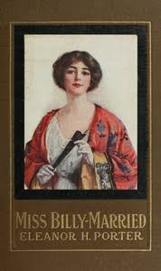

The Project Gutenberg eBook of Miss Billy - Married
This eBook is for the use of anyone anywhere in the United States and most other parts of the world at no cost and with almost no restrictions whatsoever. You may copy it, give it away or re-use it under the terms of the Project Gutenberg License included with this eBook or online at www.gutenberg.org If you are not located in the United States, you will have to check the laws of the country where you are located before using this eBook.
Title: Miss Billy — Married
Author: Eleanor H. Porter
Release date: July 11, 2008 [eBook #361] Most recently updated: May 26, 2023
Language: English
Other information and formats: www.gutenberg.org/ebooks/361
Credits: Charles Keller, and David Widger
*** START OF THE PROJECT GUTENBERG EBOOK MISS BILLY — MARRIED ***
MISS BILLY—MARRIED
By Eleanor H. Porter
Author Of Pollyanna, Etc.
TO
My Cousin Maud

________________________________________________________________________________________
Chapters
__________________________________________________________________________
“I, Bertram, take thee, Billy,” chanted the white-robed clergyman.
“'I, Bertram, take thee, Billy,'” echoed the tall young bridegroom, his eyes gravely tender.
“To my wedded wife.”
“'To my wedded wife.'” The bridegroom's voice shook a little.
“To have and to hold from this day forward.”
“'To have and to hold from this day forward.'” Now the young voice rang with triumph. It had grown strong and steady.
“For better for worse.”
“For better for worse.”
“For richer for poorer,” droned the clergyman, with the weariness of uncounted repetitions.
“'For richer for poorer,'” avowed the bridegroom, with the decisive emphasis of one to whom the words are new and significant.
“In sickness and in health.”
“'In sickness and in health.'”
“To love and to cherish.”
“'To love and to cherish.'” The younger voice carried infinite tenderness now.
“Till death us do part.”
“'Till death us do part,'” repeated the bridegroom's lips; but everybody knew that what his heart said was: “Now, and through all eternity.”
“According to God's holy ordinance.”
“'According to God's holy ordinance.'”
“And thereto I plight thee my troth.”
“'And thereto I plight thee my troth.'”
There was a faint stir in the room. In one corner a white-haired woman blinked tear-wet eyes and pulled a fleecy white shawl more closely about her shoulders. Then the minister's voice sounded again.
“I, Billy, take thee, Bertram.”
“'I, Billy, take thee, Bertram.'”
__________________________________________________________________________
On the first Sunday after the wedding Pete came up-stairs to tell his master, William, that Mrs. Stetson wanted to see him in the drawing-room.
William went down at once.
“Well, Aunt Hannah,” he began, reaching out a cordial hand. “Why, what's the matter?” he broke off concernedly, as he caught a clearer view of the little old lady's drawn face and troubled eyes.
“William, it's silly, of course,” cried Aunt Hannah, tremulously, “but I simply had to go to some one. I—I feel so nervous and unsettled! Did—did Billy say anything to you—what she was going to do?”
“What she was going to do? About what? What do you mean?”
“About the house—selling it,” faltered Aunt Hannah, sinking wearily back into her chair.
William frowned thoughtfully.
“Why, no,” he answered. “It was all so hurried at the last, you know. There was really very little chance to make plans for anything—except the wedding,” he finished, with a smile.
“Yes, I know,” sighed Aunt Hannah. “Everything was in such confusion! Still, I didn't know but she might have said something—to you.”
“No, she didn't. But I imagine it won't be hard to guess what she'll do. When they get back from their trip I fancy she won't lose much time in having what things she wants brought down here. Then she'll sell the rest and put the house on the market.”
“Yes, of—of course,” stammered Aunt Hannah, pulling herself hastily to a more erect position. “That's what I thought, too. Then don't you think we'd better dismiss Rosa and close the house at once?”
“Why—yes, perhaps so. Why not? Then you'd be all settled here when she comes home. I'm sure, the sooner you come, the better I'll be pleased,” he smiled.
Aunt Hannah turned sharply.
“Here!” she ejaculated. “William Henshaw, you didn't suppose I was coming here to live, did you?”
It was William's turn to look amazed.
“Why, of course you're coming here! Where else should you go, pray?”
“Where I was before—before Billy came—to you,” returned Aunt Hannah a little tremulously, but with a certain dignity. “I shall take a room in some quiet boarding-house, of course.”
“Nonsense, Aunt Hannah! As if Billy would listen to that! You came before; why not come now?”
Aunt Hannah lifted her chin the fraction of an inch.
“You forget. I was needed before. Billy is a married woman now. She needs no chaperon.”
“Nonsense!” scowled William, again. “Billy will always need you.”
Aunt Hannah shook her head mournfully.
“I like to think—she wants me, William, but I know, in my heart, it isn't best.”
“Why not?”
There was a moment's pause; then, decisively came the answer.
“Because I think young married folks should not have outsiders in the home.”
__________________________________________________________________________
Mr. and Mrs. Bertram Henshaw were expected home the first of September. By the thirty-first of August the old Beacon Street homestead facing the Public Garden was in spick-and-span order, with Dong Ling in the basement hovering over a well-stocked larder, and Pete searching the rest of the house for a chair awry, or a bit of dust undiscovered.
Twice before had the Strata—as Bertram long ago dubbed the home of his boyhood—been prepared for the coming of Billy, William's namesake: once, when it had been decorated with guns and fishing-rods to welcome the “boy” who turned out to be a girl; and again when with pink roses and sewing-baskets the three brothers got joyously ready for a feminine Billy who did not even come at all.
The house had been very different then. It had been, indeed, a “strata,” with its distinctive layers of fads and pursuits as represented by Bertram and his painting on one floor, William and his curios on another, and Cyril with his music on a third. Cyril was gone now. Only Pete and his humble belongings occupied the top floor. The floor below, too, was silent now, and almost empty save for a rug or two, and a few pieces of heavy furniture that William had not cared to take with him to his new quarters on top of Beacon Hill. Below this, however, came Billy's old rooms, and on these Pete had lavished all his skill and devotion.
Freshly laundered curtains were at the windows, dustless rugs were on the floor. The old work-basket had been brought down from the top-floor storeroom, and the long-closed piano stood invitingly open. In a conspicuous place, also, sat the little green god, upon whose exquisitely carved shoulders was supposed to rest the “heap plenty velly good luckee” of Dong Ling's prophecy.
On the first floor Bertram's old rooms and the drawing-room came in for their share of the general overhauling. Even Spunkie did not escape, but had to submit to the ignominy of a bath. And then dawned fair and clear the first day of September, bringing at five o'clock the bride and groom.
Respectfully lined up in the hall to meet them were Pete and Dong Ling: Pete with his wrinkled old face alight with joy and excitement; Dong Ling grinning and kotowing, and chanting in a high-pitched treble:
“Miss Billee, Miss Billee—plenty much welcome, Miss Billee!”
“Yes, welcome home, Mrs. Henshaw!” bowed Bertram, turning at the door, with an elaborate flourish that did not in the least hide his tender pride in his new wife.
Billy laughed and colored a pretty pink.
“Thank you—all of you,” she cried a little unsteadily. “And how good, good everything does look to me! Why, where's Uncle William?” she broke off, casting hurriedly anxious eyes about her.
“Well, I should say so,” echoed Bertram. “Where is he, Pete? He isn't sick, is he?”
A quick change crossed the old servant's face. He shook his head dumbly.
A quick change crossed the old servant's face. He shook his head dumbly.
“I know—he's asleep!” she caroled, skipping to the bottom of the stairway and looking up.
“Ho, Uncle William! Better wake up, sir. The folks have come!”
Pete cleared his throat.
“Mr. William isn't here, Miss—ma'am,” he corrected miserably.
Billy smiled, but she frowned, too.
“Not here! Well, I like that,” she pouted; “—and when I've brought him the most beautiful pair of mirror knobs he ever saw, and all the way in my bag, too, so I could give them to him the very first thing,” she added, darting over to the small bag she had brought in with her. “I'm glad I did, too, for our trunks didn't come,” she continued laughingly. “Still, if he isn't here to receive them—There, Pete, aren't they beautiful?” she cried, carefully taking from their wrappings two exquisitely decorated porcelain discs mounted on two long spikes. “They're Batterseas—the real article. I know enough for that; and they're finer than anything he's got. Won't he be pleased?”
“Yes, Miss—ma'am, I mean,” stammered the old man.
“These new titles come hard, don't they, Pete?” laughed Bertram.
Pete smiled faintly.
“Never mind, Pete,” soothed his new mistress. “You shall call me 'Miss Billy' all your life if you want to. Bertram,” she added, turning to her husband, “I'm going to just run up-stairs and put these in Uncle William's rooms so they'll be there when he comes in. We'll see how soon he discovers them!”